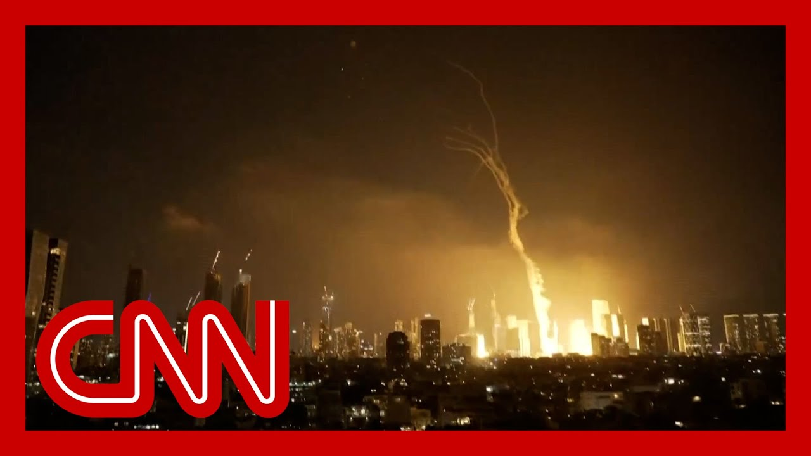

【以色列称伊朗发射导弹，特拉维夫听到爆炸声】
Summary: The situation in the region is rapidly unfolding with confirmed missile launches from Iran toward Israel, triggering sirens and defensive actions in Tel Aviv. Experts analyze Israel's multi-layered air defense systems and potential Iranian escalation.
摘要： 该地区局势迅速变化，伊朗向以色列发射导弹得到确认，特拉维夫警报响起并采取防御行动。专家分析了以色列的多层防空系统及伊朗可能的升级行动。

⏱️ Estimated Reading Time: 16 min
📚 六级生词 📚 雅思生词 📚 托福生词 📚 专八生词 📚 SAT生词 📚 考研生词 📚 GRE生词 📚 高考生词
A lot of dangers, obviously in the region and the region and a dynamic situation, one that's rapidly unfolding.
显然，该地区存在许多危险，局势动态且迅速演变。
As you were speaking, Colonel, we've actually just learned from Israeli news sources that they've identified incoming missiles right now, launched from Iran.
上校，就在您讲话时，我们刚从以色列新闻来源获悉，他们已确认此刻有来自伊朗的导弹来袭。
So we're going to continue monitoring that breaking news as we take a live look at the skies over Israel again, missiles being launched from Iran that Israel has identified.
我们将继续监测这一突发新闻，同时直播以色列上空情况，以色列已确认导弹从伊朗发射。
This is live in in Tel Aviv right now.
这是特拉维夫的实时画面。
You hear the sirens going off and it appears that there are projectiles in the sky right now.
警报声响起，目前天空似乎有抛射物。
Colonel, if you could weigh in on the capabilities that Israel has on its own to defend itself against some of these missiles, because as we saw in the attack last October, they relied on help not only from the United States, but other regional allies as well.
上校，能否请您分析以色列自主防御这些导弹的能力？因为在去年10月的袭击中，他们不仅依赖美国，还依赖其他地区盟友的帮助。
That's exactly right, Boris.
完全正确，鲍里斯。
And that helped what came in the form of cruisers, Air Force and U.S. Air Force assets.
援助以巡洋舰、空军和美国空军资源的形式出现。
So you had both the Navy and the Air Force providing support to the Israelis.
因此，海军和空军都为以色列人提供了支持。
So what the Israelis have includes it's basically a three tiered air defense system, air and missile defense system.
以色列拥有的是一个基本的三层防空系统，即空防和导弹防御系统。
One aspect of it is the Iron Dome.
其中一部分是“铁穹”。
And there.
就在那里。
It sounded like you heard a rocket go up to try to intercept something.
听起来像是火箭升空试图拦截某物。
And what we're looking at there is the possibility of them trying to intercept one of the Iranian rockets.
我们看到的是他们可能试图拦截一枚伊朗火箭。
We may see an explosion if they hit something.
如果击中目标，我们可能会看到爆炸。
And that is something that could very much change that dynamic.
这很可能会改变局势动态。
They don't strike every single incoming missile or rocket.
他们不会拦截每一枚来袭导弹或火箭。
What we're trying to do is they're trying to get the ones that are going to affect their population centers, and it's almost like tracer fire there.
他们的目标是拦截那些可能影响人口中心的导弹，看起来几乎像是曳光弹。
You see the of the blast right there that shows that they've intercepted and there's a strike.
您看到那里的爆炸，表明他们已拦截并击中目标。
There's a strike right there that may have fallen just outside the population area.
那里有一次击中，可能落在人口区外。
There in Tel Aviv.
就在特拉维夫。
But it looks pretty close to the city center.
但看起来离市中心相当近。
that is something.
这很重要。
Where there there may be some damage.
那里可能会有一些损坏。
Colonel, let's actually go live to Oren Lieberman, who's in Jerusalem for us, sheltering in a bomb shelter as we speak or in the skies over Tel Aviv, lighting up right now.
上校，让我们连线正在耶路撒冷的奥伦·利伯曼，他此刻正躲在防空洞中，或特拉维夫上空正亮起火光。
This is, frankly, what we've been waiting for over the course of the past 18 hours.
坦率地说，这是过去18小时我们一直在等待的情况。
Since the Israeli attack on Iran first took place, the response to Israel were warned could be far larger than what we have seen before.
自以色列首次袭击伊朗以来，外界警告对以色列的回应可能比以往更猛烈。
We are.
我们。
Just a few minutes ago, we got the alert from Israel's Home front command and from the Israel Defense Forces that had the bomb shelters.
就在几分钟前，我们收到以色列后方司令部和以色列国防军的警报，要求进入防空洞。
That's where you find us right now.
这就是我们现在所在的地方。
These protective doors around us and in pretty much all directions, out of the way, in and out of the bomb shelter here in the basement of the building in which the Jerusalem Bureau, is based here.
我们周围这些防护门几乎覆盖所有方向，进出这座建筑地下室的防空洞，耶路撒冷分社就设在这里。
So as we came down here, we heard the sirens going off.
我们下来时听到了警报声。
We also heard you describe.
我们也听到了您的描述。
Going in and, frankly, of intercepts, we just got a heads up from an Israeli military official that dozens of Iranian ballistic missiles are enroute to Israel.
坦率地说，关于拦截，我们刚得到以色列军方官员的提醒，数十枚伊朗弹道导弹正在飞向以色列。
The people of Israel have been instructed to remain in bomb shelters until further notice.
以色列民众被要求留在防空洞中，直至另行通知。
And then you saw some of this already begin to start playing out on your screen.
然后您已经在屏幕上看到部分情况开始发生。
Meanwhile, the red alert and I'm just listening to what I hear here.
与此同时，红色警报响起，我正在听这里的声音。
It's possible we're hearing intercepts from Jerusalem.
我们可能听到的是来自耶路撒冷的拦截声。
It's a little hard to hear it in the bomb shelter.
在防空洞里有点难听清。
You may have a better sense of that, being able to see our live pictures.
您通过我们的直播画面可能更清楚。
from from different places throughout Israel to see the incoming missiles.
来自以色列各地的画面显示来袭导弹。
But this is, frankly, what had been expected, a potentially large scale Iranian ballistic missile attack, one that could attempt to overwhelm, Israel's aerial defense systems and whether this is all of it or the beginning of it.
但坦率地说，这是预料之中的，可能是大规模的伊朗弹道导弹袭击，试图压倒以色列的防空系统，无论这是全部还是开始。
Regardless, it is according to Israel's military incoming here to head into the bomb shelter.
无论如何，以色列军方表示来袭导弹要求进入防空洞。
a short while ago, there were red alerts, in different areas throughout the country.
不久前，全国不同地区响起红色警报。
That's the warning of incoming Israeli, or rather, incoming Iranian missiles here.
这是对来袭的以色列导弹，或者说伊朗导弹的警告。
And that coming just a short time ago that compelled us to head into this bomb shelter here as we wait for the latest.
就在不久前，这迫使我们进入这个防空洞，等待最新消息。
This this could be, a longer period that will spend down here.
这可能是一段较长的待在下面的时间。
it could be in and out throughout the evening.
可能整晚进出。
This is the effectively what home front.
这实际上是后方。
Home front command has said that stay close to bomb shelters throughout the day.
后方司令部表示，全天靠近防空洞。
And we had seen out on the streets of Jerusalem, there were far fewer people out since early this morning.
我们在耶路撒冷街头看到，自今早起外出的人少了很多。
And now, just a few moments ago, probably about, an hour ago, and then again ten minutes ago, there were two more alerts from home coming home from command stay close to shelters.
就在几分钟前，大约一小时前，然后十分钟前，后方司令部又发出两次警报，要求靠近避难所。
And then just before we headed down here, that, that heads up to head to shoulders.
就在我们下来之前，提醒前往避难所。
And that's where you find this right now.
这就是您现在看到的情况。
We're waiting for more updates coming in from the Israeli military.
我们等待以色列军方的更多更新。
As of right now, the number dozens of Iranian ballistic We have seen Iran launch far larger barrages, of of more than 100 ballistic missiles.
截至目前，数十枚伊朗弹道导弹。我们见过伊朗发射更大规模的弹幕，超过100枚弹道导弹。
We also saw them launch approximately 100 drones much earlier in the day.
我们还看到他们在当天早些时候发射了约100架无人机。
From what we heard from the IDF, only one of those got through, and that was in northern Israel.
据以色列国防军称，只有一架无人机突破，那是在以色列北部。
But it was never the drones that were a major concern.
但无人机从来不是主要担忧。
It was always the ballistic missiles.
始终是弹道导弹。
And that, at least from what we're hearing right now, is what's playing out, outside of the bomb shelter here or in.
至少根据我们目前听到的，这正是防空洞外或内部正在发生的情况。
Please stand by.
请稍候。
obviously, the news here blasts heard in Tel Aviv after Israel confirmed that there were incoming ballistic missiles launched by Iran.
显然，特拉维夫听到爆炸声的新闻是在以色列确认伊朗发射弹道导弹后。
A reporter in a bomb shelter right now or.
一名记者此刻在防空洞中或。
And Lieberman, citing dozens of Iranian bombs, headed for Israel.
利伯曼称，数十枚伊朗炸弹正飞向以色列。
We saw an array of lights in the sky above Tel Aviv, at least one missile seeming to get through Israel's defenses and landing.
我们看到特拉维夫上空一系列亮光，至少一枚导弹似乎突破以色列防御并落地。
And that is the cloud of smoke that you see right now.
这就是您现在看到的烟雾云。
We have a panel of experts with us alongside, Colonel Cedric Layton.
我们有一组专家在场，包括塞德里克·莱顿上校。
We also have CNN senior military analyst, retired Admiral James DeFreitas, as well as Jason Rezaian, who was held prisoner in Iran, for several years.
我们还有CNN高级军事分析师、退役海军上将詹姆斯·德弗雷塔斯，以及曾被伊朗关押数年的贾森·雷扎安。
I believe we're watching video from moments ago.
我相信我们看到的是不久前的视频。
This is what it looked like in the skies over Tel Aviv.
这就是特拉维夫上空的样子。
Admiral.
上将。
Steve.
史蒂夫。
Rita.
丽塔。
So I'm curious to get your perspective on what we're watching unfold right now.
我很好奇您对目前局势的看法。
Well, first and foremost, you just heard the assessment that these could be dozens of ballistic missiles.
首先，您刚听到评估，这可能是数十枚弹道导弹。
this will sound odd.
这听起来可能奇怪。
I hope so.
我希望如此。
I hope it's only dozens.
我希望只有几十枚。
What we ought to be concerned about is not a few dozen.
我们该担心的不是几十枚。
That does pose a risk.
那确实构成风险。
A few may or may not get through.
少数可能会也可能不会突破。
But if the Iranians go big here and launch 200, 250 ballistic missiles, and they coordinate with Hezbollah to the north of Israel, which has been knocked back considerably over the last year, but still has surface to surface capability and is parked right along that border.
但如果伊朗大规模行动，发射200至250枚弹道导弹，并与以色列北部的真主党协调，后者去年虽受重创，但仍具备地对地能力并驻扎在边境。
that confluence coming together could overwhelm the Israeli air defenses.
这种汇合可能压倒以色列的防空系统。
And.
而且。
Oh, by the way, this is not a choreographed moment, as we saw before, where you have, as Cedric was correctly pointing out, U.S. Navy Egis class destroyers which have incredible air defense capability.
顺便说，这不是预先安排的时机，正如塞德里克正确指出的，美国海军宙斯盾级驱逐舰具有惊人的防空能力。
And we're aligned to be part of the air defense system.
它们被纳入防空系统。
Not in place right now.
但目前不在位。
So, let's hope it's going to be a relatively limited number, but if I'm, working in Israel right now, I'm very concerned about what's happening.
因此，希望数量相对有限，但如果我现在在以色列工作，我会非常担心当前情况。
And all of us who are friends of Israel ought to be very concerned about what we're seeing.
所有以色列的朋友们都应对所见感到担忧。
And at this point, we're looking at role.
此刻，我们关注的是角色。
There appears to be at least a momentary pause.
似乎至少是短暂停顿。
We do not see action being taken from Iron Dome or other missiles coming in.
我们没有看到“铁穹”或其他导弹采取行动。
What are you looking for, though?
但您在关注什么？
Were you looking for this to possibly be, in waves?
您是否预计这可能分波次进行？
Or if this is all it is, what does that tell you?
或者如果仅此而已，这说明了什么？
If this is all it is, then I think we're looking at another, if you will, performative reaction from Iran.
如果仅此而已，那么我认为我们看到的是伊朗又一次表演性反应。
Much like we saw in previous rounds of this over the last year or so.
很像过去一年左右的前几轮。
And I also was surprised, pleasantly surprised to see the drones kind of not associated with in timing with those ballistic missiles.
我也感到惊讶，且欣慰的是无人机与弹道导弹在时间上未同步。
In other words, if you want to overwhelm the air defenses, you're going to come in with a massive number and you're going to bring it all as close to zero minute, zero second as you possibly can.
换句话说，如果想压倒防空系统，需以大规模数量并在尽可能接近零分零秒的时间发动。
So the fact that it could be a wave or two that's coming might indicate a lot of confusion, an inability to synchronize back in Iran.
因此，可能来袭的一两波可能表明伊朗内部存在混乱，无法同步。
it could indicate that the Iranians are not interested in escalating this.
可能表明伊朗无意升级局势。
Although Prime Minister Netanyahu was pretty clear Israel intends to go on striking over the next, shall we say, 5 to 7 days.
尽管内塔尼亚胡总理明确表示，以色列打算在未来5至7天内继续打击。
So, Brianna, what I'm watching for is timing.
所以，布里安娜，我在关注的是时机。
Are they going to try and bring all this together?
他们会尝试同步所有行动吗？
So far they have not.
目前尚未。
That's good news for the Israeli air defenders.
这对以色列防空人员是好消息。
Israeli officials are saying that all of Israel is under fire.
以色列官员表示，整个以色列正遭受攻击。
We are looking at live pictures here from Tel Aviv.
我们正在观看特拉维夫的直播画面。
But let's take a look at what happened.
但让我们看看发生了什么。
Just moments ago as Iranian ballistic missiles came into the airspace, there.
就在不久前，伊朗弹道导弹进入领空时。
I want to bring in former Israeli ambassador Michael Oren.
我想请来前以色列大使迈克尔·奥伦。
ambassador, how are you?
大使，您好吗？
what are you seeing here?
您在这里看到了什么？
And how do you think the people outside of the region should be viewing what they have been witnessing here over the last day?
您认为该地区以外的人应如何看待过去一天所见？
my family and I are in our safe room.
我和家人在安全屋。
Brianna.
布里安娜。
We're okay.
我们没事。
The building shook.
大楼摇晃了。
Not a little bit.
不是一点点。
a couple of minutes ago.
几分钟前。
and, we've received warnings on our cell phones, very sophisticated warnings that tell us, exactly what to expect, and where to go, when the expected arrives and you're expected.
我们收到了手机上的警告，非常精确地告诉我们预期会发生什么、该去哪里，当预期情况发生时。
Did arrive.
确实发生了。
Apparently 100 rockets fired at Israel.
显然有100枚火箭弹射向以色列。
and Israeli, news is reporting that seven, have hit and the greater, Tel Aviv area.
以色列新闻称，7枚击中大特拉维夫地区。
So, that, by the way, is not an unusual number.
顺便说，这不是异常数字。
our, our missile defense systems mature, multilevel.
我们的导弹防御系统成熟且多层次。
It's an iron dome.
有“铁穹”。
Is the bottom, but that's David slang for middle for a middle range rockets.
是底层，但“大卫”是对中程火箭的俚语称呼。
Arrow two for suborbital rockets.
“箭-2”用于亚轨道火箭。
Arrow three for orbital rockets.
“箭-3”用于轨道火箭。
He's a joint Israeli American, missile systems.
这是以色列与美国的联合导弹系统。
Anti-missile systems?
反导系统？
there are about 90 to 95% effective.
其有效性约为90%至95%。
and so if, if, if Iran has fired 100 rockets at us and 5 to 7, hit, that's par for the course.
因此，如果伊朗向我们发射100枚火箭弹，5至7枚命中，这是正常情况。